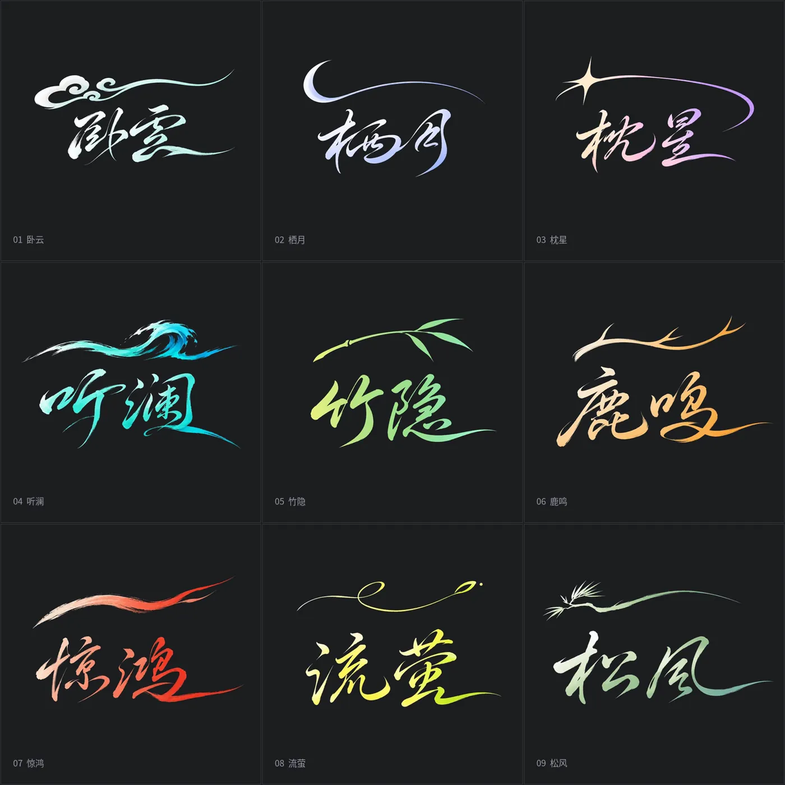
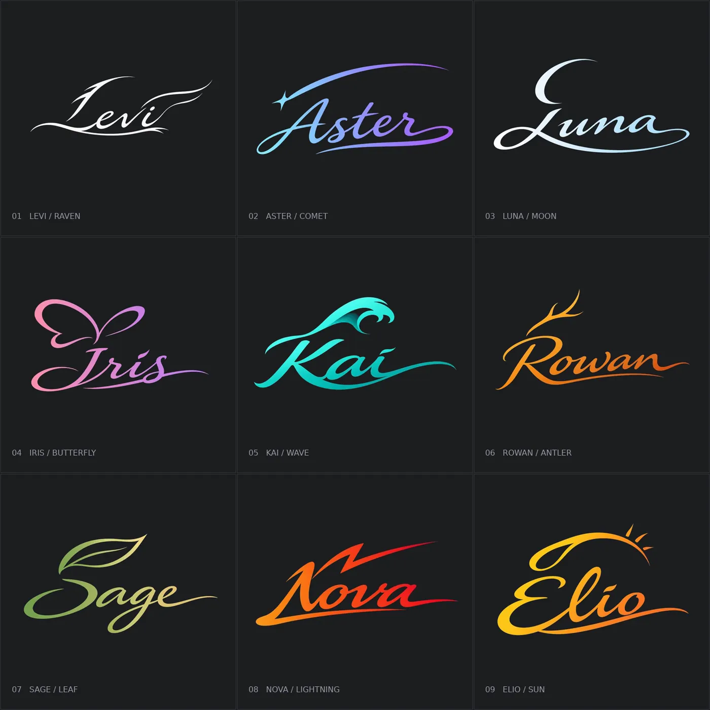
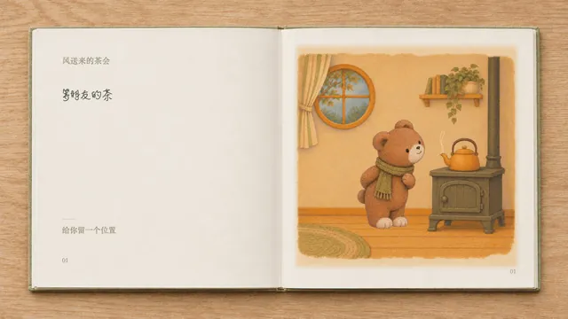
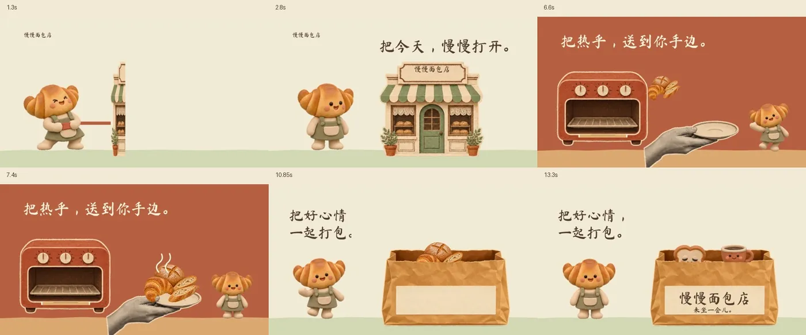

这是一套给 Codex 用的制作说明和脚本。装好以后，你给一张图、一段文字，或直接说想做什么，它会按用途选做法：聊天表情包、两态变画卡、动态海报、书写签名、电影片头、翻页绘本，或一条带角色和产品的品牌短片。对外叫「GIF 工厂」。本页以这个项目为中心。

skills/dynamic-art-signature/assets/media/chinese/nine-grid.png）。© 2026 WoYun520，MIT License（脚本与文档）。一、这是什么
WoYun520/gif-factory 的仓库简介写：「GIF 工厂：按风格制作像素、人物与宠物、粘土吉祥物、光栅卡与动态海报的 GIF Skill。」实际文档里的用途比简介更广，还包括动态签名、电影片头、动态绘本和品牌短片。作者 GitHub 用户名为 WoYun520；真实姓名与其他履历未核实 ⚠️。
2026-11-11（新加坡时间）打开的仓库首页显示：默认分支 main，公开仓库，侧栏标注 MIT license。页面内嵌数据里的 star 数约为 1178、fork 约为 140，会变 ⚠️。创建时间为 2026-11-05 12:08（新加坡时间；上游记录为 2026-11-05T04:08:24.000Z）。根目录可见 LICENSE、README.md、SKILL.md、GUIDE.md、GALLERY.md，以及 agents/、docs/previews/、examples/、references/、scripts/、skills/、styles/、tests/。本次未见仓库主题标签。
技能文件 SKILL.md 写得很清楚：对外叫 GIF 工厂，调用名却仍保留 $pixel-gif-sticker-pack。同一天，本站曾收录过作者较早的仓库 WoYun520/pixel-gif-sticker-pack（当时以表情包为主）。2026-11-11 重读该旧仓库的 README 与 LICENSE：两份 README 字节级相同，都把安装地址指向 gif-factory；旧仓库 LICENSE 仍为 MIT，Copyright (c) 2026 WoYun520。也就是说，现在的规范入口是本仓库。本页按新仓库名另写导读，不覆盖 11-05 那篇表情包页。
二、七类用途，一个总入口
一般只需安装总入口，直接说需求。若只用某一项，也可以让 Codex 单独安装对应的 Skill 文件夹。仓库列出的四条可独立安装路径是：总入口、动态签名、电影片头、动态绘本；光栅卡、动态海报和品牌短片则写在总入口与分类说明里。
- 表情包：像素、插画、真人、宠物或粘土角色；可以只做轻微点头、摇摆，也可以让角色把挥手、行礼做完。
- 光栅变画卡：一张卡片在两种样子之间切换，例如人物与面罩、日常与变身、产品的两种配色。默认 480×720、6 秒，标题保持不动。
- 动态海报：可以保留原画，让人物和文字一起变化；也可以把人物、背景和大字重新设计成一张完整海报。文档提醒：现有漫画海报是两幅完整状态切换，不能说成逐字独立动画，也不等于可玩的游戏界面。
- 动态签名：把名字和意象写进同一组笔画，再做两段快写、约一秒停顿，以及慢收锋。
- 电影片头：自报 40 种字形 ⚠️，每种有完整片头图；字和场景一起设计，也可以用你提供的风景、片名或字稿。默认横向。
- 动态绘本：一页做完一个小动作，停一下再翻页；可做独立页、横屏翻书或适合手机的竖屏书页。默认固定画面、实际 6fps、每页约三秒。
- 品牌短片：让吉祥物和产品一起演一个小故事，交付视频和可修改的工程，不套用表情包的方形循环规格。
使用指南还写：角色图、场景图、片名、台词、定稿字稿、品牌素材和配乐都可以自己提供；要分清哪些直接使用、哪些只是参考。已选中的稿子会沿用，缺的再补。拿不准时可以先做一张或一页小样。
docs/previews/pixel-light.gif），角色为仓库示例「大肥鱼（鲸鱼娘）」。这是静帧，不是原 GIF。© 2026 WoYun520。docs/previews/clay-mascot.gif），角色是虚构面包店的可颂店长。这是静帧，不是原 GIF。© 2026 WoYun520。三、表情包怎么做
画风和动作要分开看。像素画用清楚的像素块和阶梯边缘，默认 320×320，缩放时保持像素边缘。插画、真人和宠物默认 512×512；对照片，说明要求保留本人或宠物的特征、光线和衣着，不自行美颜或改成二次元。技能文档也写了一句限制：高清尺寸不保证动作和五官一致 ⚠️。
动效分两路。轻动效是每张先有不同的表情或姿势，再加小幅点头、弹跳、摇摆，字幕固定，用 scripts/export_pack.py；完整动作则要求脸、头、肩、躯干和相关手脚衣发一起配合——像素走 export_pixel_actions.py，插画或照片走 export_keyframes.py。文档明确反对只换字幕、只用整张图变形、或只转动手臂来冒充完整动作。关键帧路线「可能跳帧」，不等于视频模型里的连续运动 ⚠️。
GALLERY.md 自报：聊天表情包有 244 张已有示例，另有 2 张刚重做的动作试样，还在等使用者确认，暂不当作已认可范例。这 244 张按文档可以拆成：大肥鱼（鲸鱼娘）100 张、像素完整动作 20 张、真人与二次元连续动作 6 张、四位公众人物高清 4 张、柯基拟人 8 张、像素小秘书 100 张、粘土吉祥物 4 张，以及两张插画动作小样。另有 9 张电子光栅卡、13 张动态海报，不计入表情包数量。以上张数均为作品库自报，本站未逐文件清点 ⚠️。
本页不展示真人肖像系列，也不展示插画或海报、光栅卡里的第三方角色。作品库写明：插画小样里有初音，试样里有阿尼亚和哆啦 A 梦；光栅卡是蜘蛛侠、钢铁侠等九个角色，部分素材来自网络照片或他人插画；动态海报则包括初音、鸣人、路飞、五条悟、悟空等。这些都是效果试样，软件开源不等于获得角色或网络图片的商业授权。
四、签名、片头和绘本
动态签名把名字、意象甚至乐器写进同一组笔画。作品库称有九款英文签名（Levi、Aster 被当作逐轮修订的基准，其余七款是扩展样例，技术检查不等于逐款已获使用者认可 ⚠️），另有中文草书与「卧云间」三字布局。封面那组九宫格就是中文案例的静帧；下面是英文九宫格的静帧。署名动画另有乐器入字与粒子成字的视频，本站未下载、也未转载。

skills/dynamic-art-signature/assets/media/nine-grid.png）。© 2026 WoYun520，MIT License（脚本与文档）。电影片头自报 40 种字形，每种都有一张完整片头图 ⚠️。README 举例：用自己的风景图和片名，按「F13 粉笔拙块」做一张横向片头。目录图里的场景有的是实景照片，来源在风格目录里没有单独注明，本页因此不转载这些片头图 ⚠️。
动态绘本的完整案例叫「风送来的茶会」：自报 12 页、54 秒，有横屏摊开书本和竖屏白框书页，正文会写出来，并带轻微沙沙声与配乐 ⚠️。预览 GIF 是循环的；正式成片里动作只做一次。本站只取预览首帧，未下载 MP4。

examples/storybooks/tea-party/realbook-writing-preview.gif）。这是静帧，不是原 GIF 或成片。© 2026 WoYun520。五、品牌短片，以及许可边界
「慢慢面包店」是一条虚构店铺的 15 秒样片，文档称使用者已认可并要求发布 ⚠️。时间表是：0–5 秒，可颂拉纸条，店铺逐折展开；5–10 秒，热面包出炉，落到一只盘子上；10–15 秒，装进印有店名的外带袋。成片自报为 1920×1080、30fps，有配乐；仓库里的 GIF 只是 640×360 的无声预览。工程可分别改角色、纸片、道具、文字和声音。本站未播放视频，只收录从成片抽取的接触印样静帧。

examples/brand-films/manman-bakery/contact-sheet.jpg）。慢慢面包店为虚构名称。© 2026 WoYun520；配乐未收入本页。这条短片的署名值得单独看一眼。粘土角色和纸道具写明是对话中用内置生图做出的原稿；参考片只影响拼贴方向，像素和音频都没有收进仓库。配乐是 Kevin MacLeod 的《Carefree》，Creative Commons Attribution 3.0，截取约 9–24 秒并做了响度与淡化，发布视频时须保留署名。字体为 Ma Shan Zheng，SIL Open Font License。构思和组装方法参考了 gbro-collage-broll，但没有使用对方的画面、声音或 Gemini 视频脚本。
回到整仓的许可：MIT 管脚本和文档，不管案例里的角色生意。动态海报说明写，镜音铃、初音、鸣人、路飞、五条悟、悟空等是非官方效果案例，活动信息均为虚构，「角色 IP、参考设计语言和字体的商业权利不能由软件的 MIT 许可推定」。光栅卡说明写得更直白：九个角色的素材有生成图、照片合成和现成插画，网络素材和角色 IP「未核实商业使用授权」，来源页只用于追溯，不代表已获授权；金刚狼原作归 Daniel Vásquez 所有。本页因此不转载这些预览。
六、怎么安装，需要准备什么
README 给的安装口令是，把这句话发给 Codex：
帮我安装 GIF 工厂：https://github.com/WoYun520/gif-factory
安装 Skill 只是加入制作说明和脚本，并不等于把所有工具都装好。指南要求先检查当前环境，只补本次用得到的那部分：
- 查看案例、读说明：不需要 FFmpeg。
- 普通表情包的 GIF 和 ZIP：Python 3 与 Pillow；
export_pack.py默认高清，明确要像素风时加--render-style pixel。 - 上述表情包的 MP4 预览：加
--preview时才需要 FFmpeg。 - 动态签名：还要 NumPy、SciPy，以及 FFmpeg 和 ffprobe。
- 绘本检查：Python 3 与 ffprobe，抽帧时用 FFmpeg；制作工具另按绘本说明准备。
- 变画卡、动态海报、品牌短片：按所选做法准备图像与视频工具，不统一套用表情包依赖。
仓库不自带生图模型或付费服务。调用外部生图时，额度和费用按所用服务计算 ⚠️。技能还要求：打开实际图集逐格核对；数量按有效作品计算，不按生成次数计算；默认不把私人参考图放进分享压缩包；技术通过、视觉自查和用户认可要分开记录，不宣称所有平台兼容或所有案例稳定 ⚠️。本站未在 Codex 中安装该 Skill，也未运行任何导出脚本 ⚠️。
七、核实与注记
- 合规：先读 github.com/robots.txt（User-agent: *）。只打开仓库公开首页；未请求 github.com 的
/raw/、/tree/、/archive/、/commits/，也未调用 api.github.com，未下载 README 所链的 zip 包。LICENSE、README、SKILL.md、GUIDE.md、GALLERY.md、分类与案例说明，以及上方静帧的源文件，经 raw.githubusercontent.com 读取（该主机 robots.txt 为 404）。未下载或转载任何 GIF 动图、MP4 或音频。 - 许可证（R13）：2026-11-11 读取
raw.githubusercontent.com/WoYun520/gif-factory/main/LICENSE，全文为 MIT License，版权人为 WoYun520，年份 2026，与仓库页「MIT license」标签一致。同日重核pixel-gif-sticker-pack的 LICENSE，内容相同；其 README 已与本仓库完全一致，并指向本仓库作为安装地址。 - 仓库页内嵌的 star 数约为 1178、fork 约为 140（2026-11-11 所见）⚠️，会变。
- 作品库中的 244、9、13、40、12 页、54 秒、15 秒等数量均为文档自报，未逐文件或逐帧清点 ⚠️。
- 未安装 Skill，未运行导出或检查脚本，未播放签名、绘本或面包店视频，也未在即时通讯里投递成品 ⚠️。动效质量、平台兼容与「使用者已认可」等表述，均按文档转述。
- 片头目录中的实景照片未找到单独出处，本页不转载 ⚠️。插画预览首帧可见第三方角色，本页不转载。
附录一：README 原文
以下依据 2026-11-11 读取的 README.md 全文照录（原文为中文，MIT License）。原页中的预览 GIF、PNG 与视频未转载；正文所用静帧见上。文内链接指向原仓库。文末「下载项目」指向 GitHub 的 archive 地址，本站未获取该压缩包。
GIF 工厂
把这句话发给 Codex 安装：
帮我安装 GIF 工厂：https://github.com/WoYun520/gif-factory
安装 Skill 是加入制作说明和脚本；运行时需要的工具按功能分别准备，见需要装什么。
装好后，给一张图、一段文字，或直接说想做什么。角色图、场景图、片名、字稿和配乐都可以自己提供，缺的部分再一起补。
表情包 · 光栅变画卡 · 动态海报 · 动态签名 · 电影片头 · 动态绘本 · 品牌短片
分类说明 · 完整作品库 · 使用指南 · 下载项目（原 README 链至 GitHub archive，此处改为仓库首页，本站未获取压缩包）
仓库里有哪些 Skill
一般安装 GIF 工厂总入口即可，直接说需求。如果只用某个功能，也可以让 Codex 单独安装对应的 Skill 文件夹。
| Skill | 能做什么 | 说明 |
|---|---|---|
| GIF 工厂总入口 | 根据需求选择表情包、卡片、海报、签名、片头、绘本或品牌短片的做法 | 查看 |
| 动态签名 | 设计名字和意象，再做快写、停顿、慢收锋的动画 | 查看 |
| 电影片头 | 40 种字形可选，可以设计字、配场景，也可以用你提供的素材 | 查看 |
| 动态绘本 | 让插画做完一个动作，再翻到下一页，能做横屏或竖屏 | 查看 |
表情包
可以做像素、插画、真人、宠物和粘土角色。既能轻轻点头、摇摆，也能让角色完整做完挥手、行礼等动作。
（此处原文配有像素、插画、宠物三张预览 GIF。像素与粘土的静帧见正文；插画预览含第三方角色，宠物预览为照片风，本页均未转载。）
像素轻动效 · 像素完整动作 · 插画 · 真人 · 宠物 · 粘土吉祥物 · 全部案例
用这张角色图做 12 张中文表情包，每张表情和姿势不同，加轻微点头或摇摆，文字用我给的这组台词。
光栅变画卡
让一张卡片在两种样子之间切换，比如人物与面罩、日常与变身、产品的两种配色。
（此处原文配有光栅卡预览 GIF。因含角色 IP 与网络照片，本页未转载。）
用这两张图做一张变画卡，来回切换两种状态，标题保持不动。
动态海报
可以保留原画，让人物和文字一起变化；也可以把人物、背景和大字重新设计成一张完整海报。
（此处原文配有「字体联动」与「漫画印刷风格」两张预览 GIF。因涉及第三方角色与参考设计语言，本页未转载。）
用这个角色做一张动态宣传海报，人物从安静切到登场，大字一起展开，日期和地点固定。
动态签名
把名字、意象和乐器融进同一组笔画，再做快写、停顿和慢收锋。下面这组把竹笛、竖琴、古琴等乐器写进字里，配合粒子成字。
（此处原文配有乐器入字九宫格 GIF，并链到 MP4。本页未转载动图或视频；中英文签名静帧见正文。）
看做法 · 中英文案例 · 乐器入字与粒子成字 · Skill
做一款「卧云间＋竹笛＋月白到浅青渐变」的动态签名，让乐器融进笔画，沿用仓库的快写和慢收锋节奏。
电影片头
40 种字的风格，每种都有完整片头图。选喜欢的编号，换成你的片名；字和场景一起设计。场景图、片名文案和现成字稿都可以自己提供。
（此处原文配有 F13「粉笔拙块」片头图。因背景为未单独注明出处的实景照片，本页未转载。）
40 种字形与原图 · 五种排法 · 三联图 · Skill
用我提供的风景图和片名，按 F13 粉笔拙块做一张横向片头，字写得有点特别。
动态绘本
让插画做完一个小动作，停一下，再翻页。可以做独立动画，也可以做成横屏翻书或适合手机看的竖屏书页。
（此处原文配有横屏翻书预览 GIF，并链到 MP4。静帧见正文，未转载动图或视频。）
把这个故事做成动态绘本，一页完成一个动作，配上正文和音乐，先做一页小样。
品牌短片
让吉祥物和产品一起演一个小故事，比如拿起面包、装进包装、露出店名。可以用自己的角色、产品图和品牌素材。
（此处原文配有面包店预览 GIF，并链到 MP4。接触印样见正文，未转载动图或视频。）
用这套吉祥物和产品图做一条 15 秒品牌短片，让角色亲手把产品装进包装，给我成片和可修改的工程。
使用说明
想换台词、配色、画风、尺寸或动作，直接说。已经选好的稿子和要求会继续沿用。完整系列和试作的说明放在作品库，具体怎么提需求看使用指南。
开源许可
制作脚本与 Skill 文档采用 MIT。动态海报的角色与参考设计语言不随代码转授商业权利，见案例说明。电子光栅卡中的角色 IP、网络照片与他人插画不随代码一并授予 MIT 权利，出处及使用边界见案例来源说明。
第三方配乐和字体按各自许可使用；面包店案例的来源与署名见 CREDITS。
附录二：许可证原文
以下为 2026-11-11 自 上游 LICENSE 读取的全文。这不是法律意见。引用时请同时阅读 README 中关于角色、照片、字体与配乐的边界说明。
MIT License
Copyright (c) 2026 WoYun520
Permission is hereby granted, free of charge, to any person obtaining a copy
of this software and associated documentation files (the "Software"), to deal
in the Software without restriction, including without limitation the rights
to use, copy, modify, merge, publish, distribute, sublicense, and/or sell
copies of the Software, and to permit persons to whom the Software is
furnished to do so, subject to the following conditions:
The above copyright notice and this permission notice shall be included in all
copies or substantial portions of the Software.
THE SOFTWARE IS PROVIDED "AS IS", WITHOUT WARRANTY OF ANY KIND, EXPRESS OR
IMPLIED, INCLUDING BUT NOT LIMITED TO THE WARRANTIES OF MERCHANTABILITY,
FITNESS FOR A PARTICULAR PURPOSE AND NONINFRINGEMENT. IN NO EVENT SHALL THE
AUTHORS OR COPYRIGHT HOLDERS BE LIABLE FOR ANY CLAIM, DAMAGES OR OTHER
LIABILITY, WHETHER IN AN ACTION OF CONTRACT, TORT OR OTHERWISE, ARISING FROM,
OUT OF OR IN CONNECTION WITH THE SOFTWARE OR THE USE OR OTHER DEALINGS IN THE
SOFTWARE.